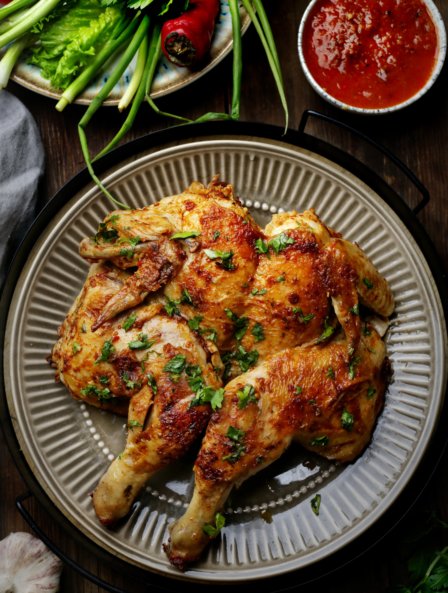

«Цыпленок жареный, цыпленок пареный…» Была такая песенка. И эти слова можно отнести к цыпленку тапака, которого еще называют «табака». Не будем углубляться в дебри этимологии, только отметим, что тапа — это глиняная сковорода, а почему русские стали называть блюдо «табака» — скорее всего, из- за привычности звучания и «табачного» золотистого цвета готового цыпленка. В этом известном всем грузинском блюде цыпленка надо максимально расплющить, а затем он жарится и парится под гнетом. И секрет его даже не в необычной манере приготовления, главное — аромат чеснока и специй, которым он пропитан. Каким бы простым ни казалось блюдо, есть много нюансов, вызывающих споры: как разрезать цыпленка — по грудке или по спинке, солить его до жарки или в процессе, когда добавлять чеснок и зелень — в маринад или смазывать соусом уже почти готового цыпленка, отбивать молотком до плоского состояния или щадящим методом надрезать сухожилия? Нужна ли специальная сковородка с гнетом или можно использовать подручные средства? И на каком масле жарить: растительном, сливочном или топленом? Для начала надо правильно выбрать цыпленка. Конечно, лучше, чтобы он был домашний. Весом не больше килограмма, чтобы уместился на сковородке. Оптимальный вариант: небольшие цыплята-корнишоны весом не более 500 г, по одному на порцию. Или на две порции, но получается так вкусно, что на половинке сложно остановиться. Что касается посуды, то подойдет чугунная или толстостенная сковородка с высокими бортиками, можно сотейник, диаметром 26–28 см. Теперь по пунктам: как разрезать цыпленка, не имеет особого значения. Можно вдоль килевой кости грудки, можно по позвоночнику. В последнем случае грудка окажется посередине и будет сочнее. Птицу удобнее всего разрезать острым ножом или кулинарными ножницами. Готовят цыпленка обычно на смеси сливочного и растительного масла. Мы же рекомендуем вместо этой смеси использовать топленое масло. У него высокая точка дымления, с ним мясо меньше пристает к сковородке, да и получается вкуснее. Что касается специй, то обычно цыпленку хватает перца и чеснока. Можно взять традиционную аджику (смесь жгучего перца с солью) или использовать свежий перчик чили. По желанию добавьте хмели-сунели или паприку, но это необязательные специи.